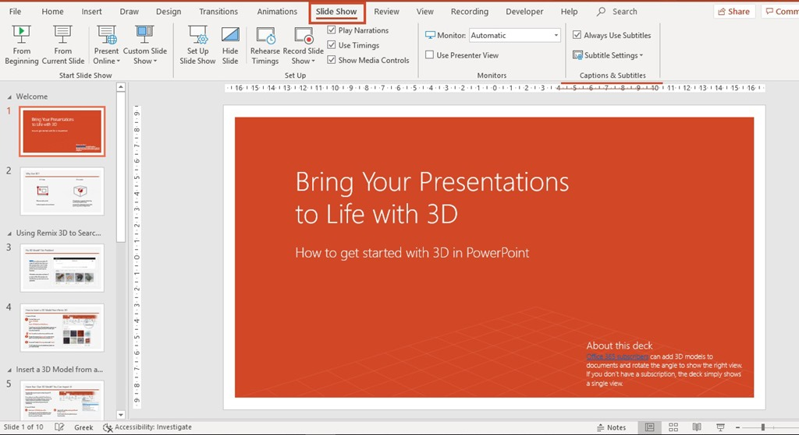

microsoft power point is a presentation programme, created by Robert Gaskins and Dennis AUustin at a software company. it is often used to create business presentations, but can also be used for educational or informal purposes. The presentations are comprised of slides, which may contain text, images,and other media, such as audio clips and movies. power point presentations work like slide shows.
it alows us to use images, videos,and audio to have a greater visual impact.
it can be used virtually anywhere.
it is a collaborative solution.
you can choose to create your own design or use existing ones.
it export in different formats.
it is a powerful teaching tool.both its advantages and disadvantages should be recognized. use power point as an assistent tool in education. explore new ways to use power point.
here is a slight view of power point
